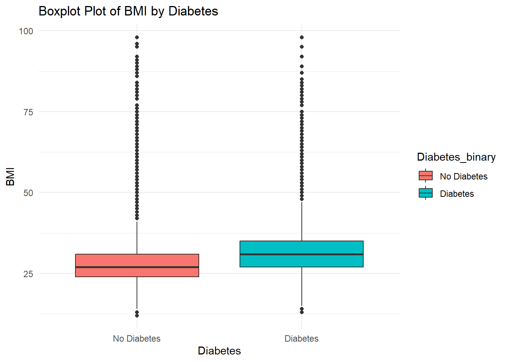

── Attaching core tidyverse packages ──────────────────────── tidyverse 2.0.0 ──
✔ dplyr 1.1.4 ✔ readr 2.1.5
✔ forcats 1.0.0 ✔ stringr 1.5.1
✔ ggplot2 3.5.1 ✔ tibble 3.2.1
✔ lubridate 1.9.3 ✔ tidyr 1.3.0
✔ purrr 1.0.2
── Conflicts ────────────────────────────────────────── tidyverse_conflicts() ──
✖ dplyr::filter() masks stats::filter()
✖ dplyr::lag() masks stats::lag()
ℹ Use the conflicted package (<http://conflicted.r-lib.org/>) to force all conflicts to become errors
Attaching package: 'scales'
The following object is masked from 'package:purrr':
discard
The following object is masked from 'package:readr':
col_factorFinal Project EDA File
This file will contain exploratory data analysis on diabetes in a telephone survey conducted by the CDC. The response variable we will be using in our analysis is a binary variable about whether the patient has diabetes or not. The other variables that we might use as predictors include BMI and other binary variables about having high BP, high cholesterol, or other common indicators of health.
Introduction
The data we have for this report is from kaggle.com. The data set we are examining is from a health-related telephone survey that is collected annually from the CDC. There are 253,680 observations in the data set we will read in. The response variable that we will be looking at is a binary variable that represents whether or not the subject has diabetes. The goal of this project will be to build different models and compare them as to which model most effectively predicts the presence/absence of diabetes in a subject. We will use one numeric predictor in our models and that is BMI. The other variables we will analyze are some factor variables: Whether or not the subject has high blood pressure, whether or not the subject has high cholesterol, whether or not the subject is a smoker, whether or not the subject does any physical exercise, whether or not the subject consumed fruits/vegetables daily, the age group of the subject, and the highest education level of the subject.
In this file, we will do some EDA (Exploratory Data Analysis) on our data set. This is done on data sets to explore some relationships we have between some of the predictors we will use in our models and our response variable. We can use this to get a sense of which variables seem important in predicting whether or not a subject has diabetes. We will try to explore this data set by examining numerical summaries, tables, and graphs of variables given.
In general, the primary goal of statistical modeling is to find a combination of predictor variables that are able to most accurately predict future values for a certain response variable. In this process, it also allows you to identify relationships between variables.
Data
Reading in the Data
data <- read_csv("diabetes_binary_health_indicators_BRFSS2015.csv")Rows: 253680 Columns: 22
── Column specification ────────────────────────────────────────────────────────
Delimiter: ","
dbl (22): Diabetes_binary, HighBP, HighChol, CholCheck, BMI, Smoker, Stroke,...
ℹ Use `spec()` to retrieve the full column specification for this data.
ℹ Specify the column types or set `show_col_types = FALSE` to quiet this message.head(data)# A tibble: 6 × 22
Diabetes_binary HighBP HighChol CholCheck BMI Smoker Stroke
<dbl> <dbl> <dbl> <dbl> <dbl> <dbl> <dbl>
1 0 1 1 1 40 1 0
2 0 0 0 0 25 1 0
3 0 1 1 1 28 0 0
4 0 1 0 1 27 0 0
5 0 1 1 1 24 0 0
6 0 1 1 1 25 1 0
# ℹ 15 more variables: HeartDiseaseorAttack <dbl>, PhysActivity <dbl>,
# Fruits <dbl>, Veggies <dbl>, HvyAlcoholConsump <dbl>, AnyHealthcare <dbl>,
# NoDocbcCost <dbl>, GenHlth <dbl>, MentHlth <dbl>, PhysHlth <dbl>,
# DiffWalk <dbl>, Sex <dbl>, Age <dbl>, Education <dbl>, Income <dbl>We will now change some of the variables to factors.
data <- data |>
mutate(Diabetes_binary = as.factor(Diabetes_binary),
HighBP = as.factor(HighBP),
HighChol = as.factor(HighChol),
Smoker = as.factor(Smoker),
Age = as.factor(Age),
Education = as.factor(Education),
PhysActivity = as.factor(PhysActivity),
Fruits = as.factor(Fruits),
Veggies = as.factor(Veggies)
)
head(data)# A tibble: 6 × 22
Diabetes_binary HighBP HighChol CholCheck BMI Smoker Stroke
<fct> <fct> <fct> <dbl> <dbl> <fct> <dbl>
1 0 1 1 1 40 1 0
2 0 0 0 0 25 1 0
3 0 1 1 1 28 0 0
4 0 1 0 1 27 0 0
5 0 1 1 1 24 0 0
6 0 1 1 1 25 1 0
# ℹ 15 more variables: HeartDiseaseorAttack <dbl>, PhysActivity <fct>,
# Fruits <fct>, Veggies <fct>, HvyAlcoholConsump <dbl>, AnyHealthcare <dbl>,
# NoDocbcCost <dbl>, GenHlth <dbl>, MentHlth <dbl>, PhysHlth <dbl>,
# DiffWalk <dbl>, Sex <dbl>, Age <fct>, Education <fct>, Income <dbl>Next, we will update the levels of the factors by renaming them. Therefore, instead of numeric values for the levels the levels will have character values that make more sense.
# Recoding all of the factors
data <- data |>
select(where(is.factor), BMI) |>
mutate(Diabetes_binary = fct_recode(Diabetes_binary,"No Diabetes" = "0",
"Diabetes" = "1"),
HighBP = fct_recode(HighBP, "No" = "0",
"Yes" = "1"),
HighChol = fct_recode(HighChol, "No" = "0",
"Yes" = "1"),
Smoker = fct_recode(Smoker, "No" = "0",
"Yes" = "1"),
PhysActivity = fct_recode(PhysActivity, "No" = "0",
"Yes" = "1"),
Fruits = fct_recode(Fruits, "No" = "0",
"Yes" = "1"),
Veggies = fct_recode(Veggies, "No" = "0",
"Yes" = "1"),
Age = fct_recode(Age,
"18-24" = "1",
"25-29" = "2",
"30-34" = "3",
"35-39" = "4",
"40-44" = "5",
"45-49" = "6",
"50-54" = "7",
"55-59" = "8",
"60-64" = "9",
"65-69" = "10",
"70-74" = "11",
"75-79" = "12",
"80+" = "13"),
Education = fct_recode(Education,
"No school" = "1",
"Grades 1-8" = "2",
"Grades 9-11" = "3",
"High School Graduate" = "4",
"College 1-3 Years" = "5",
"College Graduate" = "6"))Next, we will check for missing data in the data set.
sum(is.na(data))[1] 0As we can see from this code, there are no missing values in our data set. Therefore, we are able to move forward with our exploratory data analysis without having to think of ways to work around missing values.
Summaries
Tables
Age Group vs. Proportion with Diabetes
We will first look at the proportion of people with diabetes across each age group. This will give a better understanding as if age has an impact on the presence of diabetes.
age_proportion_diabetes <- data |>
group_by(Age) |>
summarize(Proportion_Diabetes = mean(Diabetes_binary == "Diabetes")) |>
arrange(Age)
age_proportion_diabetes# A tibble: 13 × 2
Age Proportion_Diabetes
<fct> <dbl>
1 18-24 0.0137
2 25-29 0.0184
3 30-34 0.0282
4 35-39 0.0453
5 40-44 0.0650
6 45-49 0.0879
7 50-54 0.117
8 55-59 0.138
9 60-64 0.172
10 65-69 0.204
11 70-74 0.218
12 75-79 0.213
13 80+ 0.185 As we can see from this table, the proportion of people with diabetes in the age group increases as the age group gets older. This shows us that age can be an important factor in regards to predicting diabetes in a subject.
Education Level vs. Proportion with Diabetes
education_proportion_diabetes <- data |>
group_by(Education) |>
summarize(Proportion_Diabetes = mean(Diabetes_binary == "Diabetes")) |>
arrange(Education)
education_proportion_diabetes# A tibble: 6 × 2
Education Proportion_Diabetes
<fct> <dbl>
1 No school 0.270
2 Grades 1-8 0.293
3 Grades 9-11 0.242
4 High School Graduate 0.176
5 College 1-3 Years 0.148
6 College Graduate 0.0969As we can see from this table, the subjects with more education were less likely to have diabetes. There seems to be a negative correlation between these two variables. One possible explanation for this is that the subjects with little to no education most likely come from lower-income families who are not able to afford good healthcare or possibly live in food deserts.
Graphs
Next, we will look at a graph of the proportion of people with diabetes that also have high blood pressure and the proportion of people with diabetes that do not have high blood pressure. This will show if there is a large difference in proportions betweeen these two groups.
Graph of High BP vs. Diabetes
high_BP_Proportion <- data |>
group_by(HighBP) |>
summarize(Proportion_Diabetes = mean(Diabetes_binary == "Diabetes"))
ggplot(high_BP_Proportion, aes(x = HighBP, y = Proportion_Diabetes, fill = HighBP)) +
geom_bar(stat = "identity", width = 0.7) +
scale_y_continuous(labels = percent_format(accuracy = 1)) +
labs(
title = "Proportion of Diabetes by BP Status",
x = "Does Subject Have High BP?",
y = "Proportion with Diabetes"
) +
theme_minimal()As we can see, the subjects with High BP are much more likely to have diabetes. Therefore, this variable could be an important predictor variable in our models.
Now, we will do the same process with the high cholesterol variable, the smoker variable, and the physical activity variable to see if we see similar trends.
Graph of High Cholesterol vs. Diabetes
high_Chol_Proportion <- data |>
group_by(HighChol) |>
summarize(Proportion_Diabetes = mean(Diabetes_binary == "Diabetes"))
ggplot(high_Chol_Proportion, aes(x = HighChol, y = Proportion_Diabetes, fill = HighChol)) +
geom_bar(stat = "identity", width = 0.7) +
scale_y_continuous(labels = percent_format(accuracy = 1)) +
labs(
title = "Proportion of Diabetes by Cholesterol Status",
x = "Does Subject Have High Cholesterol?",
y = "Proportion with Diabetes"
) +
theme_minimal()Here, we see a very similar pattern in this graph. This could indicate that cholesterol is important in predicting diabetes, but could also indicate some multicollinearity between our predictors, as someone who has high blood pressure is also likely to have high cholesterol.
Graph of Smokers vs. Diabetes
Smokers_Proportion <- data |>
group_by(Smoker) |>
summarize(Proportion_Diabetes = mean(Diabetes_binary == "Diabetes"))
ggplot(Smokers_Proportion, aes(x = Smoker, y = Proportion_Diabetes, fill = Smoker)) +
geom_bar(stat = "identity", width = 0.7) +
scale_y_continuous(labels = percent_format(accuracy = 1)) +
labs(
title = "Proportion of Diabetes by Smoker Status",
x = "Is Subject a Smoker?",
y = "Proportion with Diabetes"
) +
theme_minimal()In this graph, we don’t see as much of a gap between proportion of diabetes in the two different groups. This could mean that the binary smoker variable isn’t as important of a predictor to diabetes than high cholesterol or high blood pressure.
Graph of Exercise vs. Diabetes
Exercise_Proportion <- data |>
group_by(PhysActivity) |>
summarize(Proportion_Diabetes = mean(Diabetes_binary == "Diabetes"))
ggplot(Exercise_Proportion, aes(x = PhysActivity, y = Proportion_Diabetes, fill = PhysActivity)) +
geom_bar(stat = "identity", width = 0.7) +
scale_y_continuous(labels = percent_format(accuracy = 1)) +
labs(
title = "Proportion of Diabetes by Exercise Status",
x = "Does Subject Exercise?",
y = "Proportion with Diabetes"
) +
theme_minimal()As we can see from this graph, the subjects that exercise have about a 12% chance of having diabetes, whereas the subjects that do not exercise have about a 22% chance. This predictor could also be valuable in predicting whether or not a subject has diabetes.
Next, we will make a boxplot of BMI for the group with diabetes and the BMI for the group without diabetes.
Boxplots of BMI vs. Diabetes
ggplot(data, aes(x=Diabetes_binary, y=BMI, fill = Diabetes_binary)) +
geom_boxplot() +
labs(
title = "Boxplot Plot of BMI by Diabetes",
x = "Diabetes",
y = "BMI"
) +
theme_minimal()
The middle 50% of BMI in the group with diabetes seems to be higher than the middle 50% BMI for the group with no diabetes. Therefore, we would expect a higher BMI to lead to a slightly higher chance of diabetes in the subject.